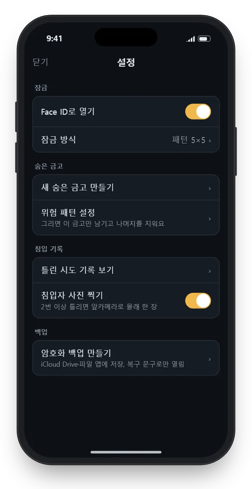
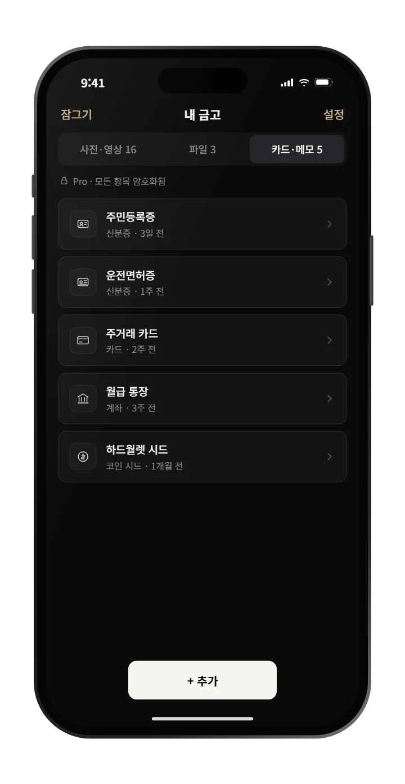
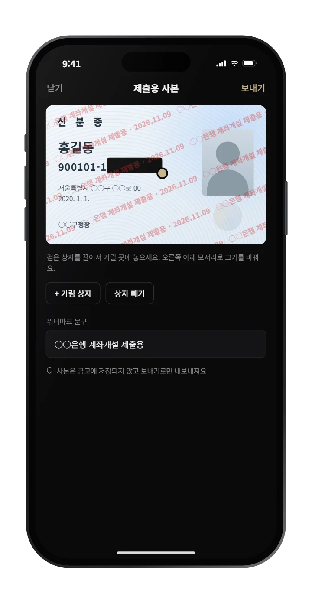

LOCKBOX
사진첩에 두기
불안한 것들,
락박스에 잠가 두세요.
사적인 사진과 동영상, 신분증, 카드 번호까지. 내 패턴으로만 열리고, 락박스를 만든 저희도 열 수 없어요.
- 가입 없이 바로 시작
- 10개까지 무료
- 내 아이폰에만 저장
이런 분께 필요해요
폰을 맡기는 순간,
걱정되는 사진이 있다면
아이폰의 '가려진 항목'은 폰 암호만 알면 열려요. 가족이나 연인과 암호를 함께 쓴다면, 따로 잠그는 곳이 필요해요.
폰을 자주 빌려줄 때
아이에게, 친구에게 폰을 건네도 금고 속 사진은 보이지 않아요.
신분증을 자주 보낼 때
은행, 부동산, 중고거래. 뒷자리를 가리고 워터마크를 넣어 보내요.
비밀번호를 적어 둘 때
메모 앱 대신 금고에. 카드·계좌·코인 시드도 양식에 맞춰 보관해요.
사진첩에 남기기 싫을 때
금고 카메라로 찍으면 처음부터 사진 앱에 남지 않아요.
락박스에만 있는 기능
사진첩 속 신분증,
락박스가 먼저 찾아 드려요
은행에 보내려고 찍은 신분증, 카드 앞뒷면, 통장 사본, 캡처해 둔 코인 복구 문구. 사진첩 어딘가에 그대로 남아 있기 쉬워요. 사진첩 점검은 최근 사진 1,000장에서 이런 사진을 찾아 금고로 옮기도록 도와줘요.
- 글자 확인은 이 아이폰 안에서만 해요
- 사진도, 읽은 글자도 어디로 보내거나 저장하지 않아요
- 직접 고른 사진만 금고로 옮기고, 원본 정리까지 이어서 해요
이렇게 지켜드려요
잠그고, 모으고, 안전하게 보내요

01 — 잠금
폰 암호와 다른,
나만 아는 잠금
점 25개짜리 5×5 패턴이나 PIN으로 잠그고, 평소엔 Face ID로 빠르게 열어요. 폰 암호를 아는 사람도 금고는 못 열어요.
- 틀린 시도는 시간과 함께 기록, 원하면 앞카메라로 한 장
- 앱을 벗어나는 순간 자동으로 잠김
- 패턴마다 다른 금고, 무료로 3개까지

02 — 보관
사진부터 신분증, 카드까지
한곳에
사진·동영상은 물론 PDF 같은 파일, 신분증·카드·계좌·비밀번호·코인 시드를 양식에 맞춰 보관해요. 민감한 칸은 평소에 가려져 있어요.
- 사진을 넣으면 촬영 위치 정보는 자동 삭제
- 카카오톡·사진 앱에서 공유하면 바로 금고로
- 금고에 넣은 뒤 원본 사진 정리까지 안내

03 — 제출
신분증은 가리고,
어디 낼지 적어서 보내요
주민번호 뒷자리처럼 필요 없는 칸은 가리고, '○○은행 제출용 · 날짜' 워터마크를 넣은 사본만 보내요. 원본은 금고에 그대로 남아요.
- 가림 상자는 손가락으로 끌어서 위치 조정
- 사본은 금고에 남지 않고 보내기로만 내보내요
만든 사람도 못 여는 이유
지켜 줄 서버가 없어서,
털릴 서버도 없어요
대부분의 앱은 사진을 회사 서버에 올려요. 락박스는 처음부터 서버를 만들지 않았어요. 그래서 저희도, 애플도 금고 안을 볼 수 없어요.
열쇠는 내 폰에만
금고를 여는 열쇠는 내 패턴으로 폰 안에서 만들어지고, 폰 밖으로 나가지 않아요.
가입도, 서버도 없어요
이메일도 전화번호도 묻지 않아요. 회사가 해킹돼도 내 사진은 영향이 없어요.
애플도 못 봐요
아이폰 백업이나 iCloud에 들어가도 잠긴 채로 저장돼요. 여는 열쇠는 이 아이폰을 떠나지 않아요.
기술 사양 자세히 보기
- 파일·목록 암호화
- AES-256-GCM
- 열쇠 만들기
- PBKDF2-SHA256, 600,000회 반복
- 마스터 키
- 기기에서 무작위 생성한 256비트
- 침입 기록 봉인
- X25519 공개키 암호
- 백업
- 기기에서 암호화한 뒤 저장
- 서버·계정·분석 도구
- 없음
솔직하게 알려 드려요. 패턴과 복구 문구 12단어를 모두 잃으면 저희도 금고를 열어 드릴 수 없어요. 그래서 금고를 만들 때 복구 문구를 꼭 적어 두도록 안내해요.
시작은 1분이면 충분해요
설치하고, 패턴 그리고, 넣으면 끝
패턴 정하기
3×3·5×5 패턴이나 PIN을 정하고, 화면에 나오는 한글 복구 문구 12단어를 종이에 적어 둬요.
사진·서류 옮기기
사진 앱에서 고르거나 금고 카메라로 찍어요. 들어오는 순간 잠겨요.
원본 정리하기
사진 앱에 남은 원본을 지울지 바로 물어봐요. 최근 삭제된 항목까지 비우면 끝이에요.
다른 방법과 비교
'가려진 항목'과 뭐가 다른가요?
기본 기능은 잠깐 안 보이게 하는 데는 충분해요. 다만 폰 암호를 아는 사람에게는 열려 있어요.
| 락박스 | 아이폰 가려진 항목 | 계산기 위장 앱 | |
|---|---|---|---|
| 폰 암호를 아는 사람 | 못 열어요 | 열 수 있어요 | 앱마다 달라요 |
| 사진 파일 자체 잠금 | 암호화 | 숨김만 | 앱마다 달라요 |
| 회원가입·회사 서버 | 없음 | iCloud 동기화 | 가입 요구 많음 |
| 신분증 제출용 사본 | 지원 | - | - |
| 강요받을 때 대비 | 숨은 금고·위험 패턴 | - | - |
가격
먼저 무료로 써 보세요
사진·카드·메모 합쳐 10개, 금고는 3개까지 무료예요. 더 필요해지면 그때 고르세요.
결제는 Apple 인앱결제로 안전하게 처리돼요.
안내 글
사진·서류 지키는 법
자주 묻는 질문
궁금한 점이 있으신가요?
락박스는 어떤 앱이에요?
락박스(Lockbox)는 사진·동영상·신분증·카드·비밀번호를 아이폰 안에서만 암호화해 보관하는 금고 앱이에요. 내가 정한 패턴으로만 열리고, 패턴마다 다른 금고를 만들 수 있어요. 회사 서버와 계정이 없어서 락박스를 만든 저희도, 애플도 금고 안을 볼 수 없어요.
패턴을 잊어버리면 어떻게 되나요?
금고를 만들 때 받은 한글 복구 문구 12단어로 열 수 있어요. 패턴과 복구 문구를 모두 잃으면 누구도 되찾아 드릴 수 없어요.
애플이나 락박스가 제 파일을 볼 수 있나요?
볼 수 없어요. 파일은 아이폰 안에서 잠긴 뒤 저장돼요. 아이폰 백업이나 iCloud에 들어가도 잠긴 상태 그대로이고, 여는 열쇠는 이 아이폰을 떠나지 않아요. 직접 만드는 암호화 백업도 복구 문구로만 열려요.
회원가입이 필요한가요?
아니요. 계정, 이메일, 전화번호 모두 필요 없어요.
사진첩 점검은 사진을 서버로 보내나요?
아니요. 사진 속 글자는 이 아이폰 안에서만 읽고, 사진도 읽은 글자도 어디로 보내거나 저장하지 않아요. 찾은 사진 중 직접 고른 것만 금고로 옮겨요.
폰을 바꾸면요?
설정에서 암호화 백업을 만들어 iCloud Drive나 파일 앱에 저장하세요. 새 폰에서 백업 파일과 복구 문구로 복원해요.
3×3과 5×5 패턴 중 뭐가 좋아요?
5×5는 점이 25개라 훨씬 추측하기 어려워요. 빠르게 열고 싶다면 패턴과 Face ID를 함께 쓰세요.
금고는 몇 개까지 만들 수 있나요?
무료로 3개까지, Pro는 제한 없이 만들 수 있어요. 잠금 화면에서 새 패턴을 그리면 그 패턴으로 열리는 새 금고가 생겨요. 금고마다 이름과 색을 정할 수 있어서 지금 어느 금고가 열렸는지 바로 알 수 있어요.
사용 데이터를 수집하나요?
아니요. 락박스에는 분석 도구가 없어요. 결제는 Apple 인앱결제로 처리돼요.